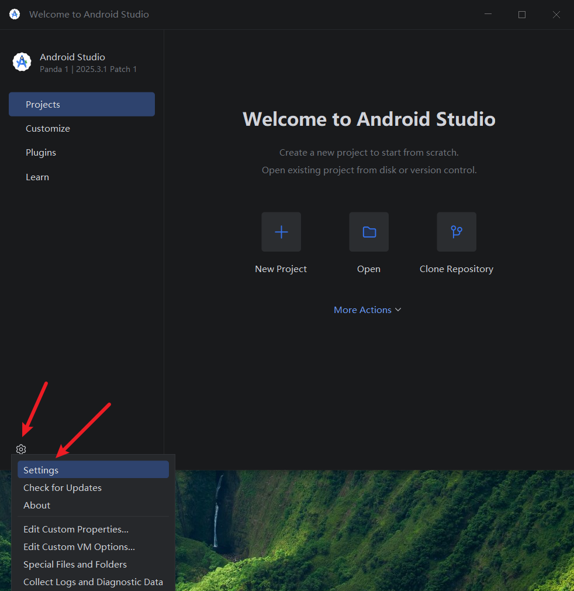
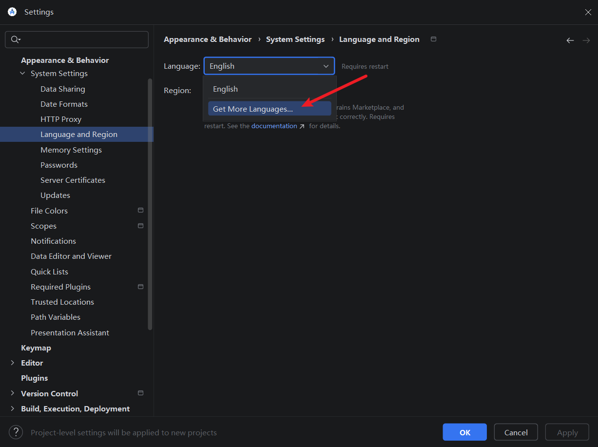
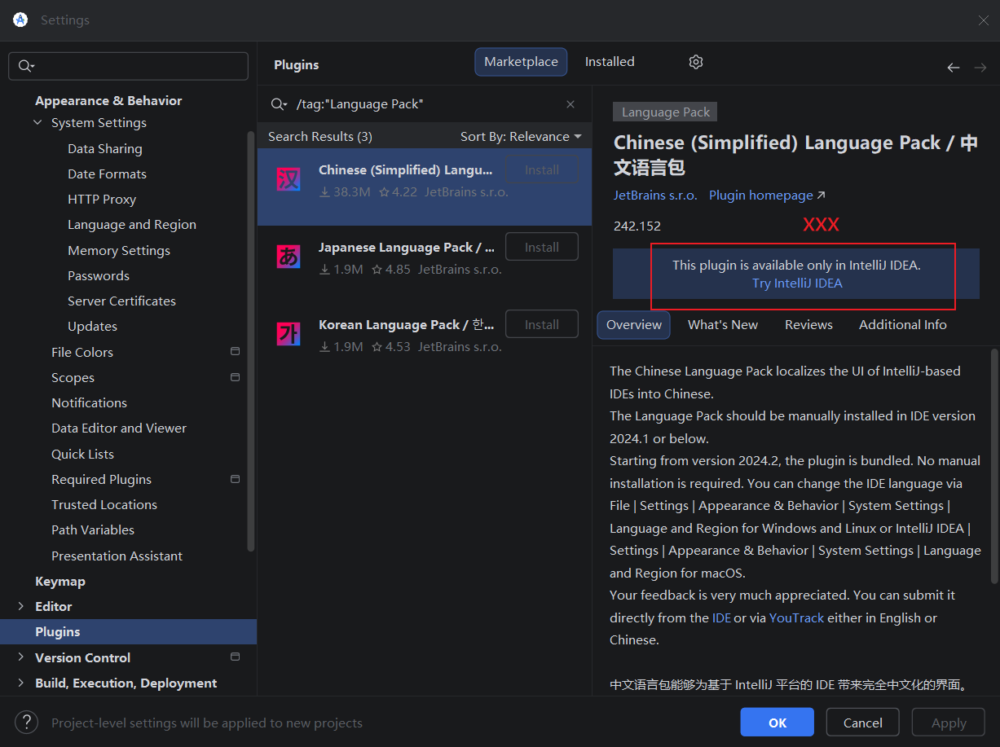
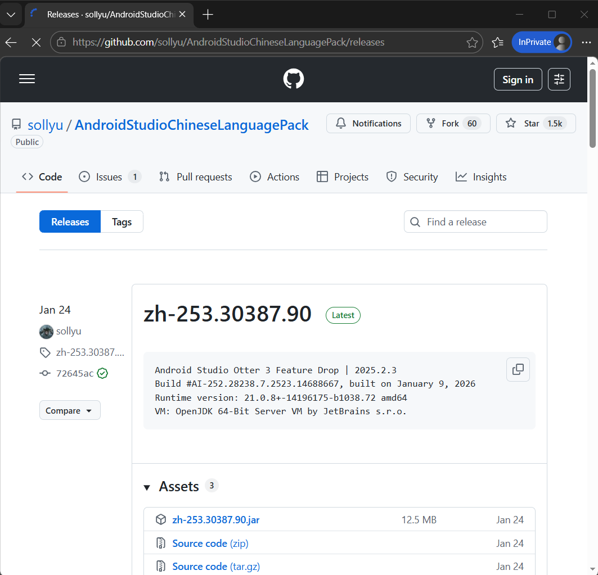
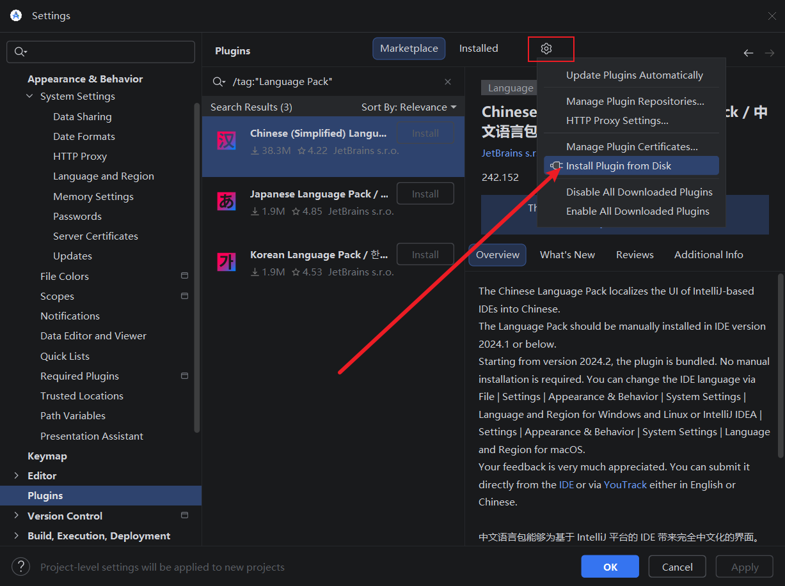
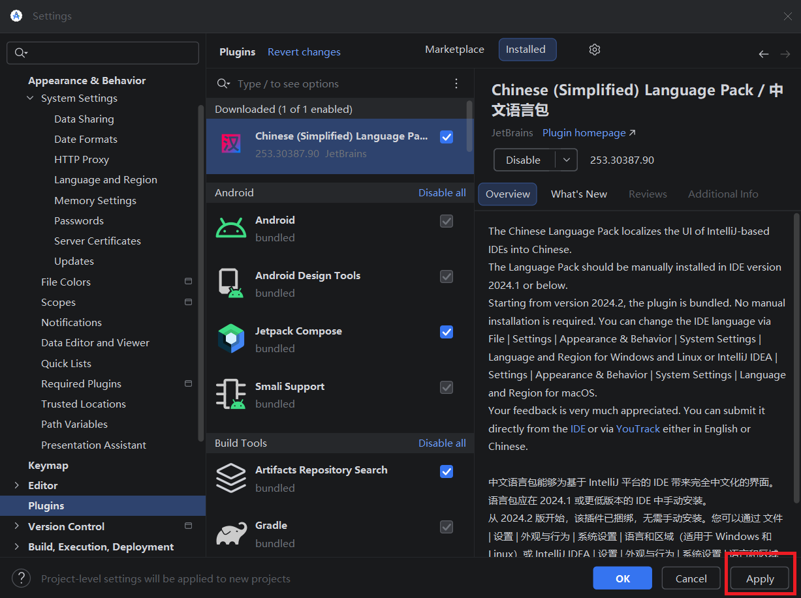
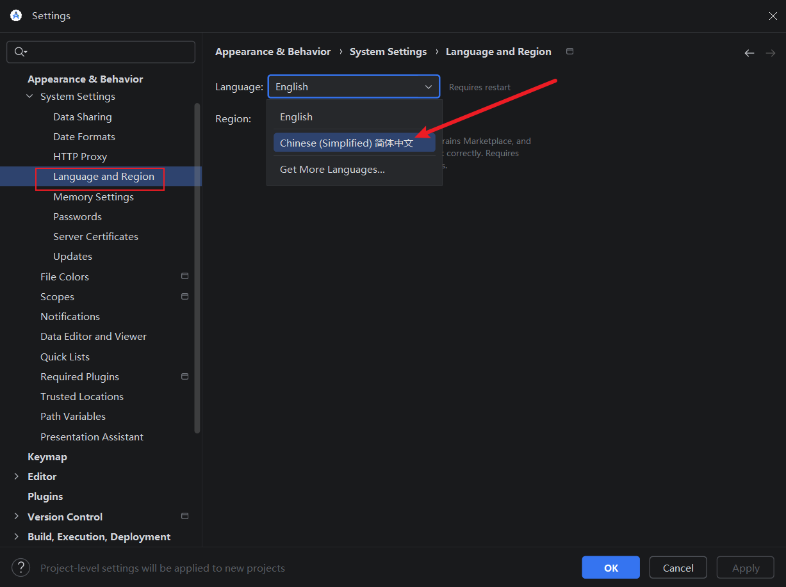
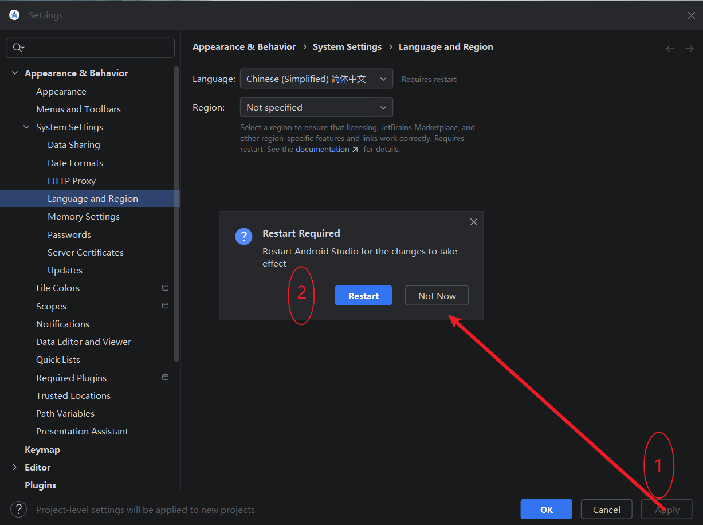
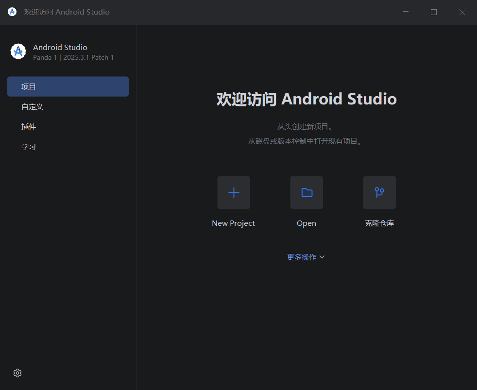

老毛病了，看着就是别扭，首先想到的就是汉化……本以为和



下面开始真正的汉化过程，不过咱得首先感谢一个项目：sollyu/AndroidStudioChineseLanguagePack: AndroidStudio中文插件（官方修改版本）

这里下载的应该当时最新版本，和

从磁盘选择已经下载的汉化包

如图，已经安装了本地的语言包插件，点击“Apply”

好了，终于有了……

点击“Apply”，还需要重启一下。赶紧看一下效果吧，您上眼：
